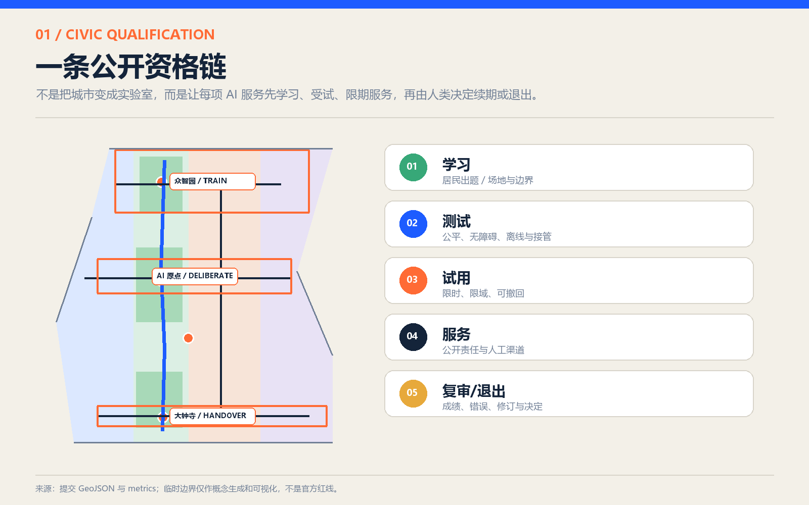
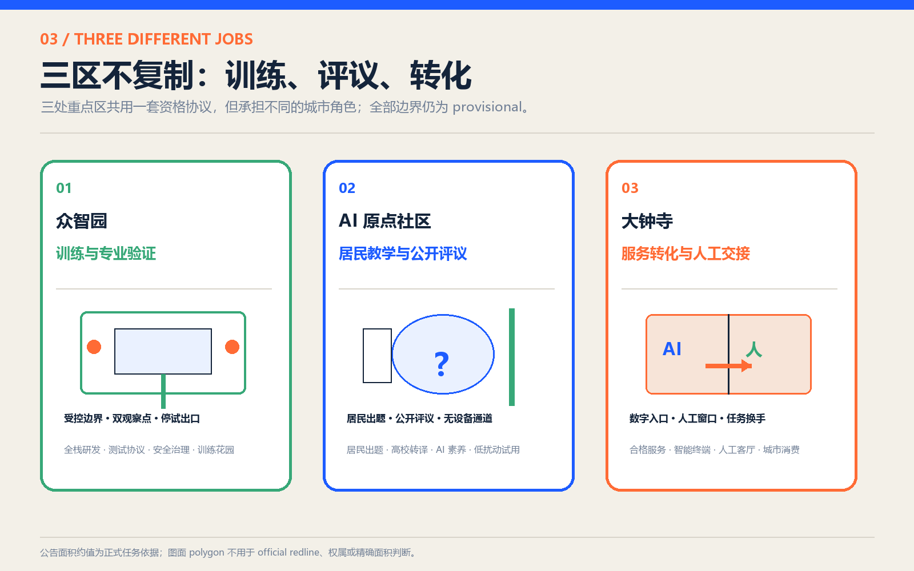
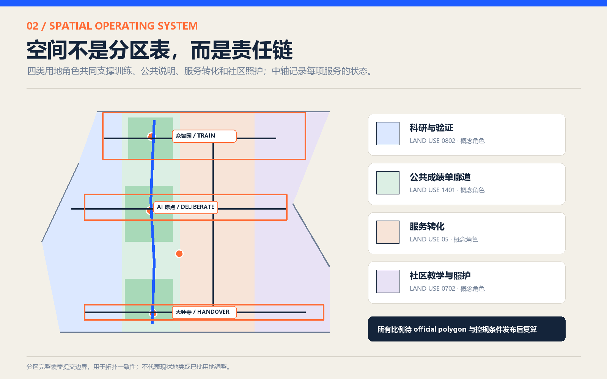
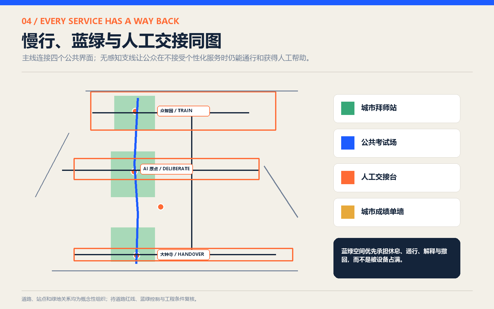

拜师 / 学习
居民出题；读取场地事实；登记禁止用途。
城市不是 AI 的试验品，
城市是 AI 的老师。
京张学徒线不是一条技术展线，而是一条公共责任线。它把百年京张铁路的学习精神转译为下一世纪的城市制度：先拜师，再上岗；先受试，再服务；先公开，再扩张；能交接，也能退出。
总览地图 · 三层范围 · 重点区域 · 用地分区 · 交通慢行 · 蓝绿公共空间 · 更新项目 · AI 场景 · 核心指标
京张学徒线把“责任”做成一条看得见、问得到、退得回的城市资格链。
任何服务都不能从实验室直接进入街道。每次扩围都要重新公开证据、责任人、停止条件和人工路径。
居民出题；读取场地事实；登记禁止用途。
安全、公平、可读性、离线与人工兜底。
限时、限域、可撤回；试用不等于批准。
责任人、人工渠道和无 AI 选择始终可见。
公开效果、错误、申诉；决定续期、修改或退出。
把居民问题、禁区和场地事实登记成一份公开“学徒任务书”。
提出问题的权利用相同尺度展示成功、失败、偏差和停止阈值，不只展示最好结果。
看见失败的权利现场、电话、纸面和代理服务并行；拒绝 AI 不得降低服务质量。
选择不用 AI 的权利公开服务期限、责任主体、投诉、暂停与复审记录，形成服务护照。
质询与申诉的权利京张学徒线沿既有创新走廊建立“训练—评议—交接”的空间分工：北段训练但不能自行发证，中段让公众教学并公开受试，南段只接纳通过资格链的有限服务。
把研发能力约束在可审查的测试协议内，形成花园型、低扰动的城市实验界面。
京张学徒线的精神中心：技术在这里向城市拜师，把黑箱翻译成公共语言。
通过资格链的服务在这里限时上岗，并与看得见的人工服务客厅并置。
精确不是堆砌细节，而是明确每张图的证据职责。以下图件统一采用同一套范围披露、概念色谱与 provisional 标识；它们共同构成京张学徒线的空间证据链。





官方公告约数。讨论产业生态、区域协同和未来城市机制，不新增伪精确 polygon。
官方公告约数。提交 polygon 是 provisional constraint，仅用于生成、拓扑和展示。
官方公告约数。三处 polygon 均为 provisional，不能证明红线、权属或精确面积。
12 张场景卡都是京张学徒线上的“试岗记录”：每张卡同时写明数据、风险与人工路径。没有人工交接、停止条件和无 AI 选项的场景，不获得服务资格。
京张学徒线的终点不是“上线”，而是一份持续更新、允许不及格的城市成绩单。